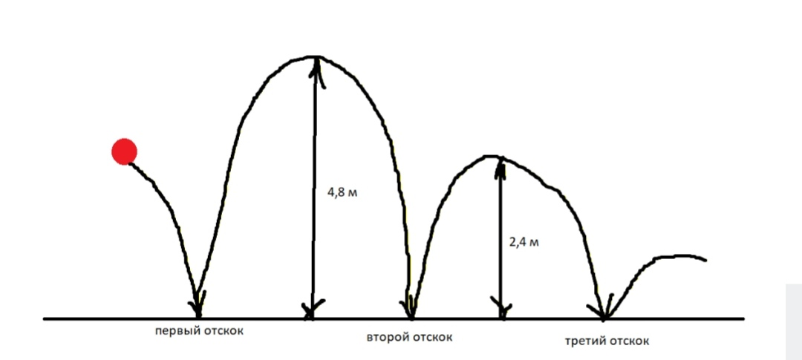

Задание №14
Инструкция к выполнению
90% заданий на прогрессии на столько интуитивно простые, что не требуют знаний теории и тем более владения формулами. Они решаются простым перебором значений, но снова стоит предупредить: читаем задания крайне внимательно и маленькими частями.
Начнём с терминологии. Прогрессия — это последовательность чисел, где числа изменяются по какому-нибудь математическому закону. Например:
- каждое следующее число на единицу больше предыдущего
- каждое следующее число на единицу меньше предыдущего
- каждое следующее число в два раза больше предыдущего
Причём каждое число в прогрессии имеет свой порядковый номер:
2 - первый член прогрессии, 4 - второй член прогрессии, 8 - третий член прогрессии и т.д.
Давайте ещё вспомним математику второго класса, когда только начиналось знакомство с простейшими задачами. Они были такие:
1) На одном кусте 5 роз, а на другом на 3 розы больше. Сколько роз на втором кусте?
2) На одном кусте 5 роз, а на другом в 2 раза больше. Сколько роз на втором кусте?
Уже поняли в чём разница? — В предлогах!
❗ В математике предлог «на» означает сложение и вычитание, а предлог «в» — умножение и деление.
То есть, в первой задаче, мы будем к 5 прибавлять 3, во второй задаче 5 умножать на 2.
В этом же заключается разница между арифметической и геометрической прогрессией:
Члены арифметической прогрессии увеличиваются или уменьшаются «на» какое-то числовое значение, геометрической — изменяются «во» сколько-то раз.
Теперь рассмотрим пример из ОГЭ:
В амфитеатре 15 рядов. В первом ряду 28 мест, а в каждом следующем на 3 места больше, чем в предыдущем. Сколько мест в двенадцатом ряду амфитеатра?
Как мы говорили в 10 и 12 заданиях, читаем задачу по частям:
- В амфитеатре 15 рядов
- В первом ряду 28 мест
- В каждом следующем на 3 места больше, чем в предыдущем
- Сколько мест в 12 ряду амфитеатра?
Каждый кусочек обдумываем и анализируем отдельно.
Скорее всего, уже стало понятно, что первое предложение не нужно для решения. Второе и третье — описывают последовательность: начинается она с числа 28 (первый член последовательности a₁ = 28), каждое следующее число увеличивается на 3 (разность d = +3). Кстати, предлог «на» говорит о том, что перед нами арифметическая прогрессия, а в скобках указаны термины и обозначения. Так как прогрессия задаётся математическим законом, значит будут формулы (которые есть в справочных материалах).
Перед нами встаёт выбор: решить по формулам, либо к 28 прибавлять 3, пока не доберёмся до 12 ряда.
Последний вариант решения явно понятней и предпочтительней. Главное, не запутаться в решении. Если Вы выбрали этот путь, распишите решение подробно, чтобы избежать ошибок:
2 ряд – 31 место
3 ряд – 34 места
...
12 ряд – 61 место
✅ Ответ: 61 место
Если Вы захотели решать с помощью формул, то ищем в справочных материалах следующую:
Во всех этих формулах буква n обозначает порядковый номер члена прогрессии. В нашей задаче – это номер ряда. Нам нужно узнать, сколько мест находится в двенадцатом ряду, поэтому везде вместо переменной n пишем 12. Выше было указано, что a₁ = 28, d = +3. Подставим всё в формулу:
Это решение короче, исключает ошибки из-за невнимательности, но надо понимать, что и куда подставлять.
Рассмотрим ещё один пример:
При проведении опыта вещество равномерно охлаждали в течение 10 минут. При этом каждую минуту температура вещества уменьшалась на 7° С. Найдите температуру вещества (в градусах Цельсия) через 4 минуты после начала проведения опыта, если его начальная температура составляла –13° С.
Здесь важно запомнить, если в задаче попадается опыт, то начинаем его с нулевого момента времени (как при использовании секундомера).
Прошла 1 минута — стало -17°
Прошло 2 минуты — -21°
Прошло 3 минуты — -24°
Прошло 4 минуты — -27° (а это пятый член прогрессии)
А теперь зададим наводящие вопросы для тех, кто хочет попробовать решить с помощью формул: Какая прогрессия дана в задаче? Чему равен первый член прогрессии? Чему равна разность? Какой член прогрессии надо найти?
Следующий пример:
Каучуковый мячик с силой бросили на асфальт. Отскочив, мячик подпрыгнул на 4,8 м, а при каждом следующем прыжке он поднимался на высоту в два раза меньше предыдущей. При каком по счёту прыжке мячик в первый раз не достигнет высоты 10 см?
Обратим внимание на части:
- Отскочив, мячик подпрыгнул на 4,8 м
- При каждом следующем прыжке он поднимался на высоту в два раза меньше предыдущей
- При каком по счёту прыжке мячик в первый раз не достигнет 10 см?
Ещё один хороший совет – визуализировать задачу. Проще говоря, представить, нарисовать схему и т.д.
Дружно представляем, как мячик кидают об асфальт:

Записываем последовательность:
- После 1 отскока – высота 4,8 м
- После 2 отскока – высота 2,4 м (из условия задачи в два раза меньше)
- После 3 отскока – высота 1,2 м
- После 4 отскока – высота 0,6 м = 60 см
- На данном этапе, для удобства, можно высоту перевести в сантиметры
- После 5 отскока – высота 30 см
- После 6 отскока – высота 15 см
- После 7 отскока – 7,5 см, что меньше 10 см
✅ Ответ: 7
Следующий пример:
Митя играет в компьютерную игру. Он начинает с 0 очков, а для перехода на следующий уровень ему нужно набрать не менее 8 000 очков. После первой минуты игры добавляется 2 очка, после второй – 4 очка, после третьей – 8 очков и так далее. Таким образом, после каждой следующей минуты игры количество добавляемых очков удваивается. Через сколько минут Митя перейдет на следующий уровень?
Давайте определим, какая перед нами прогрессия? По окончании первой минуты Митя получает 2 очка, второй – 4, третьей – 8. Числа, как мы видим, «удваиваются», значит это — геометрическая прогрессия:
Очки после каждой сыгранной минуты суммируются. Например: после второй минуты на счету игрока будет 6 очков, а после третьей минуты — 14.
В этой задаче так же можно считать вручную до 8000 очков. Кажется, что это будет очень долго, так как начинаем счёт с 2, но на самом деле числа будут увеличиваться достаточно быстро.
2 мин → 2+4 = 6 очков
3 мин → 6+8 = 14 очков
4 мин → 14+16 = 30 очков
5 мин → 30+32 = 62 очка
6 мин → 62+64 = 126 очков
7 мин → 126+128 = 254 очка
8 мин → 254+256 = 510 очков
9 мин → 510+512 = 1022 очка
10 мин → 1022+1024 = 2046 очков
11 мин → 2046+2048 = 4094 очка
12 мин → 4094+4096 = 8190 очков
✅ Ответ: через 12 минут
📌 Памятка по прогрессиям:
- Арифметическая прогрессия — изменяется «на» (сложение/вычитание)
- Геометрическая прогрессия — изменяется «во» (умножение/деление)
- Читаем задачу маленькими частями и визуализируем
- Можно решать простым перебором — это часто быстрее